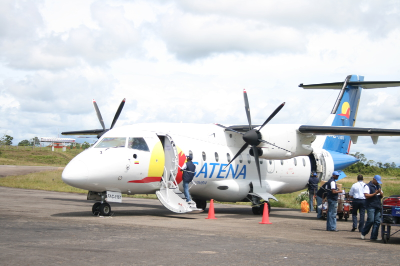

El SERVICIO AÉREO A TERRITORIOS NACIONALES S.A. SATENA, es una areolinea estatal, conformada como Sociedad de Economía Mixta por Acciones del orden Nacional, de carácter anónimo y vinculada al Ministerio de Defensa Nacional, con objeto social de prestar servicio aéreo de pasajeros, correo y carga. Se enfoca en prestar un servicio de transporte aéreo para las regiones menos desarolladas del pais, dicho enfoque se plantea como una obligación ante los problemas geográficos, de orden público o pobreza de ciertas regiones del país, que impiden que otros operadores presten el servicio, lo que permite integrar estas regiones aisladas al desarrollo económico y social del resto del país.
Usando los datos disponibles en datos abiertos que presenta las rutas de Satena a las regiones con poca (o ninguna) prescencia de areolineas junto con la frecuencia de vuelos por semana se genera la siguiente visualización.
Visualización basada en el codigo de M. Bostock disponible aquí.
Explorar la topología de la red que representa las rutas que Satena provee.
Localizar los caminos posibles para ir de un municipio a otro con Satena.
Localizar los puntos del país de más dificil acceso.
Según la abstracción de Tamara se tiene:
Se trata de un dataset de tipo red, los items o nodos son los municipios de Colombia (con su respectivo aeropuerto), los enlaces son los vuelos entre los distintos municipios.
Puntos para los nodos, lineas para los enlaces.
Se realiza Encode Separate para los nodos. Se realiza un map de la variable categórica frecuencia de vuelos a una escala de color.